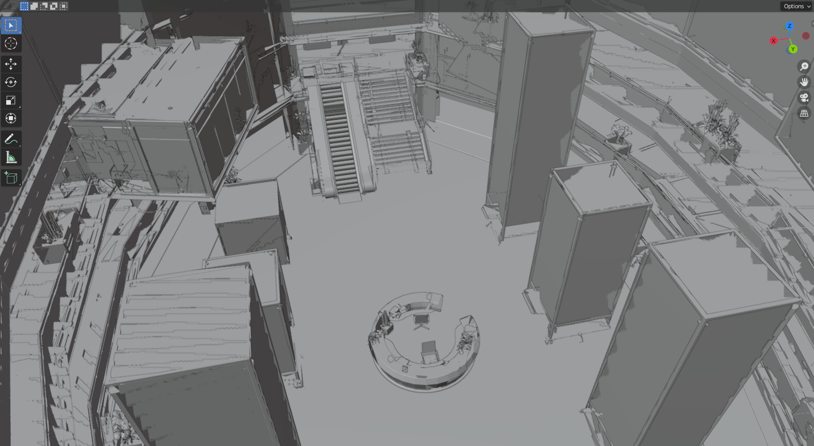

Change of plans.
Written on January 14th, 2023 by VardonirStill not dead, but very distracted.
In a way. Two months ago, someone in /r/deusex posted about a decompilation project on DXHR. Pretty cool. Cooler if I got back to studying reverse engineering, but that’s a story for another day.
It turns out that the dev for also made Blender importer tools for data extracted directly from the game.

With only Ninja Ripper + some Blender addons + some Python scripts? Building even a fraction of that took me about 5 weeks.
The importer did it in 5 minutes.
It would be faster if I were running it on a proper Linux system instead of using RDP on an WSL instance of Ubuntu, but whatever. And it comes with the secondary UV maps, which were so annoying that it almost drove me to quit the project entirely. It’s far from perfect - the textures aren’t 100% there, lots of manual editing is needed on that end, but it’s all linked so it’s not too bad.
So, change of plans.
Clearly, I can just take the output of that importer, fix up the materials, shove it in UE5, and call it a day.
Laaaaaaaaame.
Part of my original plan was to spice up the environments with modern-day tools, so the fact that this importer exists means that I can skip the tedious mesh extraction bits and jump straight to the fun parts. For instance:
I can make it rain:

Insert a character:

And control time:

Well, okay, the importer doesn’t handle exterior scenes that well, so most of the meshes in those three previews were actually obtained from Ninja Ripper. And, yes, the coat that Manny is wearing is extracted from MD instead of HR.
I’m planning something much more complex for the SI HQ map, but posting little things like this makes me happy.
That said, now that I can work on flashier stuff, I can actually make more interesting previews faster…
PS: For that third GIF, I tried to figure out where the SI building would be located IRL given the street names in the game. More on that later.